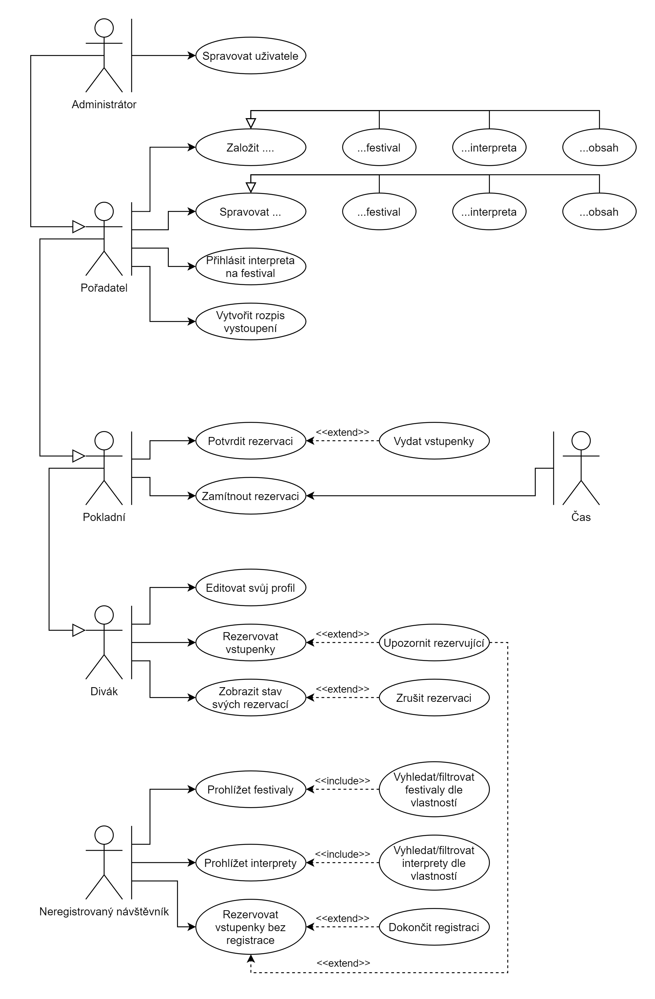
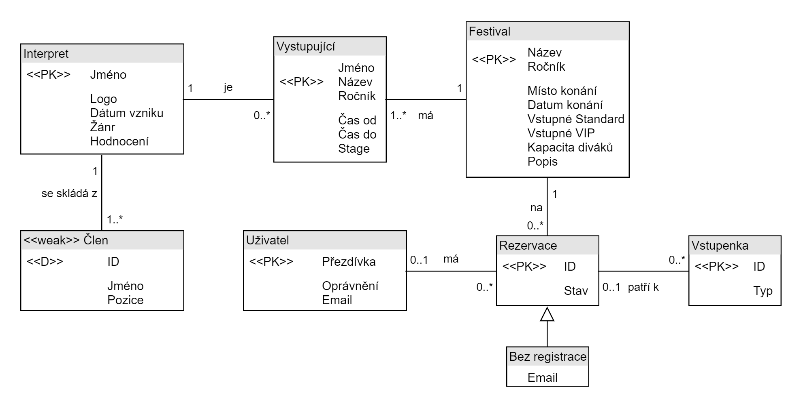
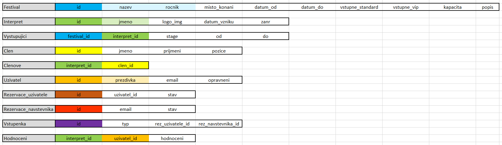

| Login | Heslo | Role |
|---|---|---|
| Leader | admin | Administrátor |
| Organizer | org | Pořadatel |
| CashMan | cash | Pokladník |
| User | user | Zákazník |
Diagram případů užití byl vytvořen podle zadání.

index.php -- Úvodní strana projektu jsou zde zobrazeny probíhájící a nadcházející festivaly
Vstupní MENU
login.php -- Přihlášení jakéhokoliv uživatele
register.php -- registrace uživatele, každý uživatel je registrován jako User. Administrátor může měnit práva.
Po přihlášení
edit.php -- uživatel může změnit své heslo a emailovou adresu
logout.php -- Odhlásí uživatele, vrátí práva návštěvníka
Funkce
functions.php -- Obsahuje funkce programu. Nejčastěji byly používány print_table(tisk tabulky) a add_database (přidání něčeho nového do databáse)
Ostatní php soubory
festivaly.php -- úvodní strana obsahuje seznam veškerých festivalů v posledních letech seřazeno od nejnovějších. V případě, že máte vyšší práva, je zde možné přidat nový festival. Při rozkliknutí detailů je vidět podrobnější popis.Při právech pořadatele je tu navíc možnost přidání interpreta na festival. Tam je ale potřeba uvést stage a datum, kdy na festivalu hraje ve formátu(yyyy-mm-dd hh:mm:ss).
tickets.php -- V momentě, kdy si kupujete vstupenku. Tato strana obsahuje informace o vstupence. Kolik si jich rezervujete a jakého typu jsou. Při kliknutí na Odeslat. Přijde zpravidla do 15 minut email o rezervaci vstupenek(email je pouze informativní). Po rezervaci si má možnost uživatel prohlédnout rezervovanou vstupenku v Menu záložka Moje rezervace. V případě, že si uživatel rezervuje vstupenku na festival, který je již zaplněn je upozorněn vyskakovacím oknem.
stat_reserv.php,Change_stateN.php,Change_stateU.php -- Strany, kam mají přístup uživatelé s právy pokladního a více. Mají možnost sledovat jednolivé rezervace uživatelů a upravit zda již uživatel uhradil vstupenky. Je zde také možnost zamítnout. Tím jsou vstupenky vymazány. Situace může nastat v případě že uživatel nebo návštěvník dlouho vstupenku neuhradili.
users.php -- Strana kam má přístup pouze administrátor. Nachází se v horní liště. Upravují se zde práva uživatelů.
bands.php -- zde jsou všechny kapely, které je možné přidat na festivaly.
edit_festival.php,edit_interpret.php -- zde jsou úpravy parametrů festivalů a interpretů.

Z ER diagramu vychází finální schéma databáze.

Obsah složky "web" přesuneme na požadované místo na webovém serveru. Požadovaná verze PHP je 5.3.29 (využívaná na serveru fakulty).
Inicializace databáze: Prostředníctvím služby phpmyadmin si založíme databázi s požadovaným jménem, ke ktorému se budeme připojovat ze skriptu functions.php (údaje sa musí shodovat). Následně ji inicializujeme (vytvoříme tabulky a naplníme je daty) použitím poskytnutého sql ve složce "database".
Zobrazení obrázků: nahrávání obrázků je funkční, avšak nejsou dostatečná práva a krom vlastníka je nikdo nevidí.
Mazání festivalů: Festivaly se nedají smazat, jelikož by došlo k větším škodám než-li k užitku.